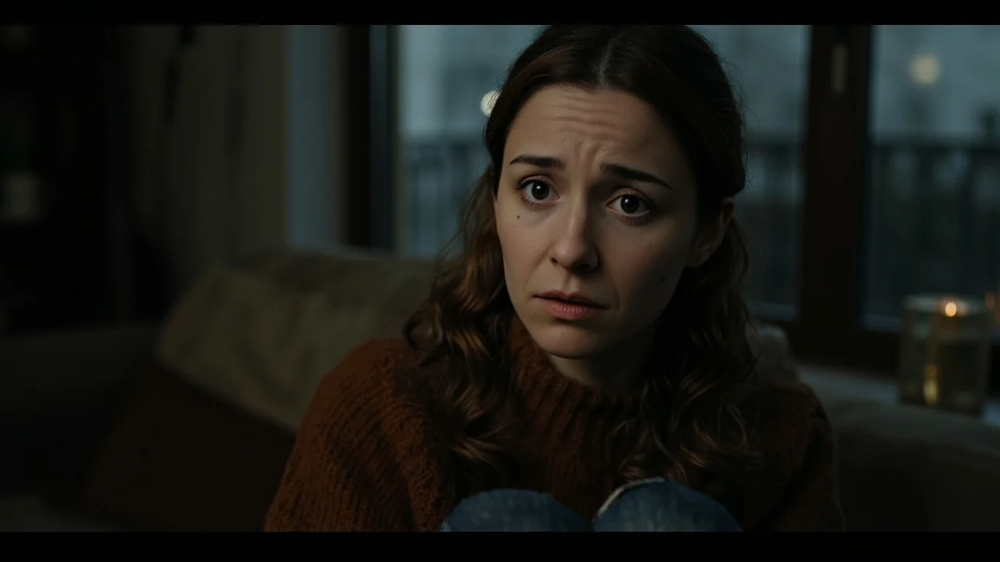
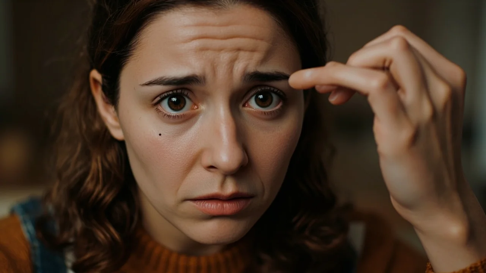
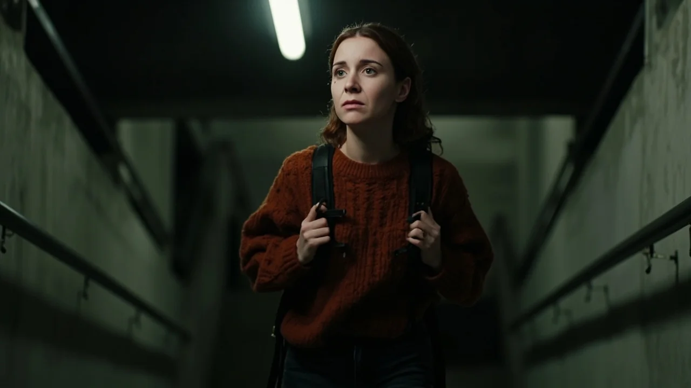
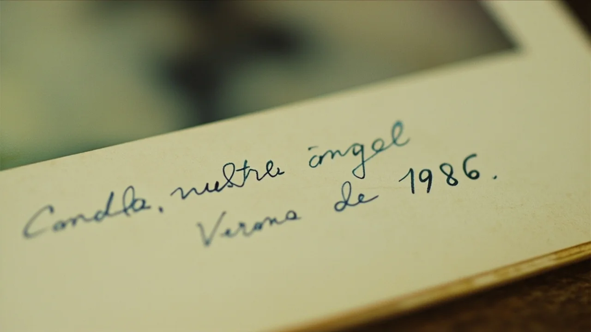
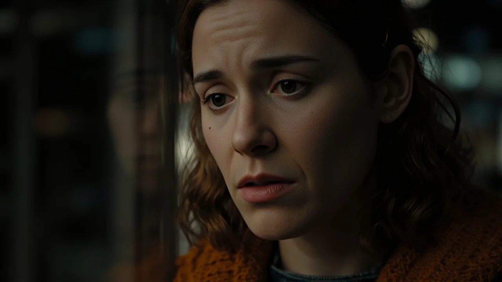

El reflejo de la pantalla iluminaba la mesa con un resplandor azulado. Afuera, la llovizna de noviembre repiqueteaba contra los cristales del salón en la calle Velarde.
El filtro se llamaba «Tu verdadero rostro». Llevaba tres días encabezando las tendencias: prometía un ajuste biométrico capaz de mostrar la versión más armónica de cada usuario sin recurrir a maquillaje digital. Martina pulsó la cámara frontal.
Una malla de puntos amarillos recorrió su frente y sus mejillas con un chasquido del altavoz. La imagen se congeló un segundo y la máscara digital encajó sobre su rostro.
Martina soltó el aire de golpe y apartó el teléfono.
En la pantalla no estaba ella. La miraba una mujer de unos treinta y ocho años, de mandíbula ancha, pelo caoba liso con raya al medio y unos ojos verdes, casi transparentes, bajo ojeras profundas. Una cicatriz vertical de dos centímetros le partía la ceja derecha y continuaba hacia la sien. Cuando Martina parpadeó, la desconocida parpadeó con un leve retraso. Cuando abrió la boca con asombro, la mujer tensó los labios con severidad amarga.
—Vaya broma —murmuró.
Deslizó el dedo para desactivar el filtro. La cámara normal le devolvió sus ojos oscuros, su pelo ondulado y el lunar sobre el pómulo izquierdo. Respiró aliviada: los servidores debían de estar colapsados. Cerró la aplicación y se fue a dormir con el rumor del agua en el patio.
A las diez de la mañana siguiente, en la cafetería cercana a su estudio de diseño, Martina esperaba el café junto a Irene entre olor a tostadas y vapor de cafetera.
—Tienes que probar el filtro nuevo —dijo Irene, revolviendo el azúcar—. A Marcos lo dejó igual, pero a mí me afinó la nariz.
—A mí me puso la cara de otra —respondió Martina sonriendo—. Una mujer mayor con la ceja rota. Estarán saturados los servidores.
—Ponte aquí, que nos hacemos una foto antes de entrar.
Irene levantó el móvil, abrió la cámara normal y sonrió. Martina posó sujetando la taza caliente. La lente disparó dos veces.

—A ver qué tal —dijo Irene mirando la galería. Su dedo se detuvo—. Oye, qué favorecida sales.
Martina se asomó por encima de su hombro.
El café estuvo a punto de volcarse. En la foto, con su jersey terracota, no estaba su rostro: aparecía la mujer del filtro. La mandíbula angulosa, el pelo liso caoba y la cicatriz blanca partiéndole la ceja derecha. La desconocida miraba a la cámara con una sonrisa forzada.
—Irene... —susurró Martina—. ¿Qué es esto?
—Nosotras dos, ¿quién va a ser?
—Esa no soy yo. Yo tengo el pelo ondulado, los ojos marrones y un lunar.
Irene pestañeó con desconcierto y volvió a mirar la pantalla.
—Martina, déjate de bromas. Siempre has tenido los ojos claros. Y la cicatriz la tienes desde la facultad. ¿Te has peinado distinto hoy? La voy a subir al grupo.
Irene hablaba con absoluta naturalidad. Martina retrocedió un paso, palpándose la cara con los dedos: su piel estaba lisa sobre la ceja y el relieve del lunar seguía en su sitio. Pero en el ventanal de la cafetería, su reflejo parecía más ancho, más maduro.
Fingió una migraña y volvió a su piso a primera hora de la tarde. En el baño, bajo el halógeno del espejo, su reflejo físico seguía intacto: sus veintisiete años, sus rizos castaños y sus ojos oscuros.
«Es un fallo del teléfono», pensó. «Un error de caché en las pantallas».
Encendió el portátil en el salón y abrió la nube donde guardaba sus álbumes digitalizados. Entró en la carpeta de su fiesta de dieciocho años.

Al cargar las miniaturas, ahogó un grito.
Alrededor de la mesa estaban sus tíos, sus primos y su madre sosteniendo una tarta con dos velas rojas. Y en el centro, soplando las velas con el vestido azul que Martina recordaba haber llevado, estaba la mujer de treinta y ocho años. La misma mirada fría, la misma piel pálida, la misma cicatriz en la ceja.
Con las manos heladas, marcó el número de su madre. La llamada conectó al cuarto tono.
—Hola, cariño —dijo Rosa—. ¿Pasa algo?
—Mamá... —Martina contuvo el llanto—. Descríbeme. Dime cómo tengo los ojos. ¿Tengo alguna marca en la cara?
Hubo un silencio breve al otro lado.
—¿A qué viene eso ahora, Martina? Tienes los ojos verdes de la familia de tu abuelo y la cicatriz que te hiciste de pequeña en la ceja con la cama. Anda, no digas tonterías que estoy con la cena de tu padre.
—Mamá, yo no tengo ninguna cicatriz. Mis ojos son marrones y tengo un lunar en el pómulo.
—Martina, déjate de complejos absurdos. Te llamo luego, un beso.
La línea se cortó.
El teléfono vibró sobre la mesa con una sacudida seca.
En la pantalla parpadeó un aviso del sistema:

`Alineación facial completada.` `Sustitución de metadatos finalizada.` `Índice de coherencia biográfica: 91%.`
La cámara frontal se encendió sola. El punto verde de grabación brilló en la esquina. En la ventana de vista previa, el rostro de Martina ya no existía: la mujer de pelo caoba la miraba fijamente desde el dispositivo con paciente serenidad, esperando al otro lado de la pantalla.
Un terror asfixiante se apoderó de ella.
Arrojó el teléfono contra las baldosas de la cocina. El cristal se astilló en mil pedazos, pero el diodo de la cámara continuó encendido emitiendo un zumbido. Cogió una sartén de hierro y golpeó el aparato tres veces hasta destrozar la batería y la placa base. Con una tijera extrajo la tarjeta telefónica, dobló el chip dorado y tiró los restos a la basura.
Metió una muda en una mochila, agarró la cazadora y bajó corriendo al aparcamiento.
Tenía que ir a un sitio sin redes conectadas ni copias en la nube. Tenía que ir a la casa de su abuela Herminia en San Lorenzo de El Escorial: la casona de piedra donde aún sobrevivían las cajas de zapatos con fotos en papel revelado, el único lugar donde la memoria no dependía de un servidor.
Una niebla espesa borraba los pinos de la sierra. Martina conducía aferrada al volante, evitando mirar el retrovisor por miedo a ver desaparecer sus ojos en la penumbra del coche.
Llegó a San Lorenzo pasadas las ocho. El pueblo olía a leña quemada y a granito mojado. Subió los tres escalones del porche y golpeó la puerta de madera con los nudillos.
La puerta se abrió despacio. Su abuela Herminia apareció en el umbral, con su rebeca verde botella, las gafas doradas colgando de la cadena y una taza humeante en la mano.
—¿Martina? —preguntó la anciana—. Hija mía, qué horas... Pasa adentro que estás calada.
Martina entró en el recibidor, cerró la puerta y sujetó a su abuela por los hombros.
—Abuela, mírame bien a la cara. ¿Quién soy yo?

Herminia se quedó quieta. Sus ojos azules recorrieron las facciones de Martina: la mandíbula tensa, los labios temblorosos y el lunar en el pómulo izquierdo. Una sombra de dolor antiguo nubló su mirada, y bajó la vista hacia las baldosas de barro.
—Eres mi niña —susurró con voz quebrada—. La que hemos querido siempre.
—Dime cómo es mi cara, abuela. En Madrid dicen que tengo los ojos verdes y una cicatriz en la ceja. Las fotos del móvil han cambiado. Dicen que soy una mujer de casi cuarenta años.
Herminia no respondió. Caminó despacio hacia la salita, donde crepitaba la estufa de hierro.
—Sube al desván —dijo sin girarse—. En el baúl de roble detrás del armario. La llave está en la caja de latón de las galletas. Míralo tú misma, Martina. Yo ya no tengo fuerzas para seguir fingiendo.
El desván olía a alcanfor, a papel seco y a vigas centenarias. La única bombilla colgaba de un cable desnudo en mitad de la estancia.
Martina abrió el baúl tras girar la llave de hierro y apartó varias sábanas de hilo. En el fondo descansaba un álbum encuadernado en terciopelo granate con refuerzos de latón en las esquinas. En la portada dorada figuraba una fecha grabada: *1986*.
Abrió la primera página con las manos rígidas por el frío.
Eran fotografías químicas de época pegadas con esquineras amarillentas. Cumpleaños, meriendas en el jardín y veranos en la costa con colores desvaídos.
En la tercera página, Martina se quedó sin aliento.
Una niña de tres años sonreía en un columpio bajo los cerezos. Vestía un peto vaquero y miraba a la cámara con una serenidad insólita. Tenía los ojos verdes claros, el pelo caoba sobre la frente y una fina cicatriz blanca que le partía la ceja derecha.
Al pie de la foto, con la caligrafía apretada de su abuela, estaba escrito a pluma:

*Candela, nuestro ángel. Verano de 1986.*
Martina pasó las hojas febrilmente. Las fotos de Candela llegaban hasta los cinco años: en la playa, con un perro pastor, con el uniforme escolar. Y de pronto, a mitad del álbum, las fotos se cortaban de golpe. Las páginas siguientes estaban vacías, con las esquineras arrancadas.
Debajo del álbum había una carpeta de cartón azul atada con una cinta. Martina la abrió.
Dentro halló un certificado de defunción a nombre de una recién nacida sin filiación en una clínica privada de la calle O'Donnell, varios resguardos de pagos bancarios y una partida de nacimiento falsificada donde el nombre de Candela había sido tachado con tinta roja y sustituido por el de Martina Salcedo.
Unos pasos lentos sonaron en la escalera. Herminia apareció en el desván, apoyándose en la barandilla con el pecho agitado.
—Candela desapareció una tarde de mayo en el Retiro —dijo la anciana entre lágrimas—. Tenía cinco años. Tu madre casi pierde el juicio; estuvo dos meses ingresada sin hablar ni comer. Los médicos dijeron que no resistiría otro invierno sin su hija.
Martina apretaba los papeles contra el pecho mientras la estancia parecía girar a su alrededor.
—¿Y qué hicisteis? ¿Quién soy yo?
—Tu padre y tu abuelo encontraron a un intermediario. En aquella clínica de O'Donnell entraban muchas mujeres jóvenes sin recursos. Pagaron una fortuna por una recién nacida que nadie iba a reclamar. Te trajeron envuelta en un chal una noche de tormenta. Te pusieron la ropa de Candela, te dieron sus apellidos y la cuna que llevaba dos años vacía. Para proteger a tu madre, nos convencimos de que tú eras ella. Durante veintisiete años cerramos los ojos para no ver la diferencia.
Herminia se acercó despacio y le rozó la mejilla con dedos temblorosos.
—El filtro no inventa nada, Martina. Las redes cruzan las caras de todo el país, buscan a los niños robados y comparan los huesos para devolver los nombres a los vivos. La mujer de tu teléfono es Candela, que sobrevivió en alguna parte y está reclamando los papeles que le quitamos para dártelos a ti.
Martina se apartó con suavidad.
Caminó hacia el ventanuco del desván, que daba a los tejados mojados de San Lorenzo y a la silueta oscura de las montañas. El cristal estaba empañado por el calor de la estufa.
Con la manga del jersey terracota, frotó el vaho del vidrio.
La superficie limpia le devolvió su reflejo en la penumbra.
Martina miró con atención. La mandíbula ancha ya no le parecía extraña. Las sombras bajo los ojos verdes tenían el peso de una verdad que llevaba cuatro décadas esperando en silencio. Y sobre la ceja derecha, la cicatriz blanca brillaba con la nitidez de una herida que por fin dejaba de ocultarse.
Apoyó la frente contra el cristal frío, cerró los ojos y, por primera vez en su vida, respiró hondo sin miedo a saber quién la estaba mirando.